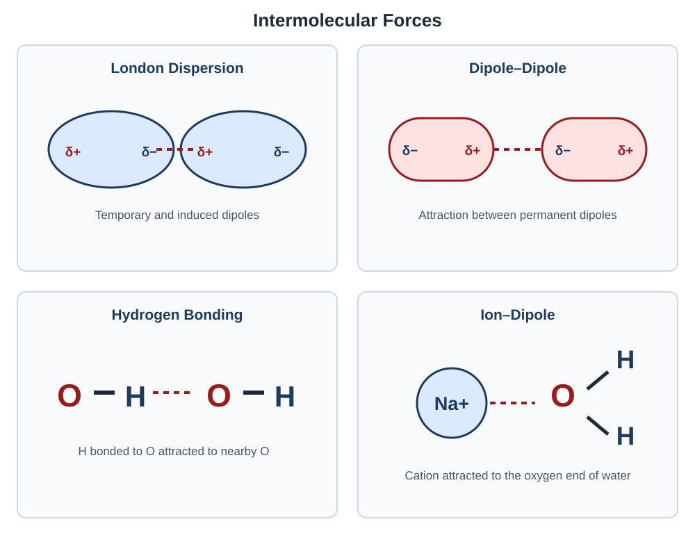
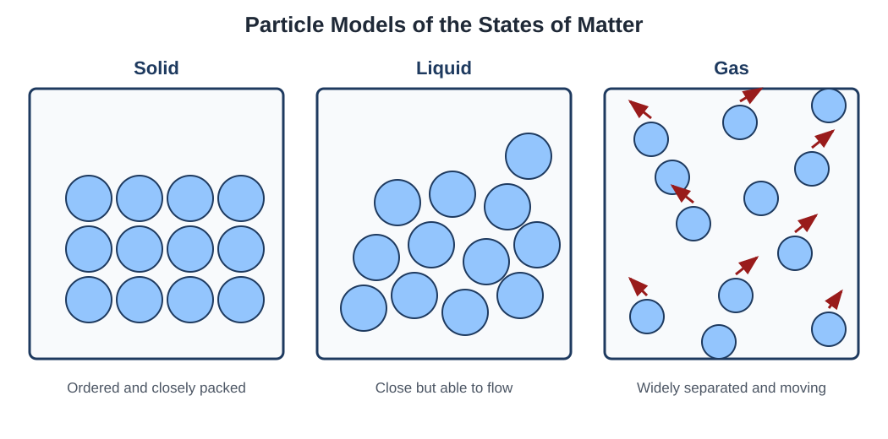
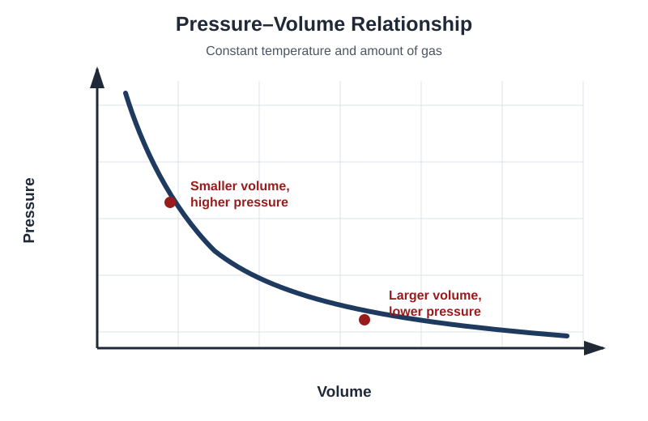
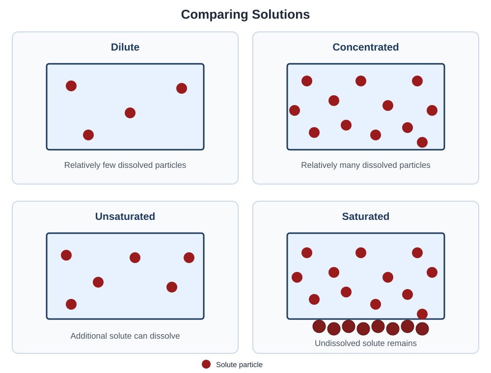

Properties of Substances and Mixtures
Explore how attractions between particles influence physical states, gas behavior, solutions, and the interaction of matter with electromagnetic radiation.
Topics
Intermolecular Forces
Compare dispersion forces, dipole–dipole attractions, hydrogen bonding, and ion–dipole attractions.
States of Matter and Gases
Connect particle motion and intermolecular forces to solids, liquids, gases, and gas-law behavior.
Solutions and Mixtures
Examine solution formation, concentration, solubility, particle diagrams, and separation methods.
Photons and Spectroscopy
Understand electromagnetic radiation and how spectroscopy provides evidence about substances.
Intermolecular Forces
Intermolecular forces are attractions between separate particles. They influence physical properties such as boiling point, melting point, vapor pressure, viscosity, and surface tension.
London Dispersion Forces
London dispersion forces result from temporary changes in electron distribution. At a particular moment, electrons may be distributed unevenly within a particle, producing a temporary dipole.
This temporary dipole can distort the electron distribution of a nearby particle, creating an attraction between the particles.
Polarizability
Polarizability describes how easily a particle’s electron cloud can be distorted. Particles with more electrons and larger electron clouds are generally more polarizable and experience stronger dispersion forces.
- Larger particles generally have stronger dispersion forces than smaller particles of a similar type.
- Molecules with greater surface area can experience stronger dispersion forces because more of their electron clouds can interact.
- Long, spread-out molecules often experience stronger dispersion forces than compact molecules with similar molar masses.
Dipole–Dipole Attractions
Dipole–dipole attractions occur between polar molecules. The partially positive end of one molecule is attracted to the partially negative end of a neighboring molecule.
Hydrogen Bonding
Hydrogen bonding is a particularly strong type of dipole–dipole attraction. It occurs when a hydrogen atom is covalently bonded to nitrogen, oxygen, or fluorine and is attracted to a lone pair on nitrogen, oxygen, or fluorine in a nearby particle.
Ion–Dipole Attractions
Ion–dipole attractions occur between an ion and a polar molecule. The charged ion attracts the oppositely charged end of the molecule’s permanent dipole.
These attractions are important when many ionic substances dissolve in water. The partially negative oxygen end of a water molecule is attracted to a cation, while the partially positive hydrogen ends are attracted to an anion.
Comparing Intermolecular Forces
| Attraction | Occurs Between | Important Requirement |
|---|---|---|
| London dispersion | All atoms and molecules | Temporary fluctuations in electron distribution |
| Dipole–dipole | Polar molecules | Permanent molecular dipoles |
| Hydrogen bonding | Suitable molecules containing H and N, O, or F | H must be bonded directly to N, O, or F |
| Ion–dipole | An ion and a polar molecule | Attraction between a full charge and partial charge |

Intermolecular Forces and Physical Properties
Changing a substance’s physical state requires particles to move farther apart or move more freely. Stronger intermolecular attractions require more energy to overcome and therefore affect measurable physical properties.
| Property | Effect of Stronger Intermolecular Forces | Reason |
|---|---|---|
| Boiling point | Increases | More energy is needed to separate particles into a gas |
| Vapor pressure | Decreases | Fewer particles can escape from the liquid |
| Volatility | Decreases | The substance evaporates less readily |
| Viscosity | Generally increases | Particles resist flowing past one another |
| Surface tension | Generally increases | Particles at the surface experience stronger attractions |
| Melting point | Often increases | More energy may be required to disrupt the solid structure |
Comparing Similar Substances
When comparing physical properties, first identify the particles present and all attractions they experience. Then consider polarizability, molecular shape, and the strength of the attractions.
Example: CH4 and C3H8
Both methane and propane are nonpolar, so their primary intermolecular attractions are London dispersion forces.
Propane has more electrons and a larger, more polarizable electron cloud. It therefore experiences stronger dispersion forces and has a higher boiling point than methane.
Intermolecular Forces Practice
Support each answer by identifying the relevant attraction and connecting it to a physical property.
Question 1: Water and Hydrogen Sulfide
H2O and H2S are both bent, polar molecules. Explain why H2O has the higher boiling point.
Show solution
Water molecules can form hydrogen bonds because hydrogen is bonded directly to oxygen.
H2S cannot form the same type of hydrogen bonding because its hydrogen atoms are bonded to sulfur. The stronger attractions between water molecules require more energy to overcome, giving water the higher boiling point.
Question 2: Dispersion Forces
Neon and krypton are both monatomic, nonpolar substances. Which is expected to have the higher boiling point, and why?
Show solution
Krypton is expected to have the higher boiling point.
Krypton has more electrons and a larger electron cloud, making it more polarizable. It therefore experiences stronger London dispersion forces than neon.
Question 3: Molecular Shape
Two nonpolar molecules have the same molecular formula and similar molar masses. Molecule A has a long shape, while Molecule B has a compact, nearly spherical shape. Which one is expected to experience stronger dispersion forces?
Show solution
Molecule A is expected to experience stronger dispersion forces.
Its longer shape provides greater surface contact between neighboring molecules. More of the electron clouds can interact, strengthening the dispersion attractions.
Question 4: Vapor Pressure
At the same temperature, Liquid X has a lower vapor pressure than Liquid Y. Which liquid likely has stronger intermolecular forces? Explain.
Show solution
Liquid X likely has stronger intermolecular forces.
Stronger attractions hold its particles in the liquid more effectively, so fewer particles escape into the gas phase. This produces a lower vapor pressure.
Question 5: Ion–Dipole Attraction
Explain why the oxygen ends of water molecules point toward Na+ ions when sodium chloride dissolves in water.
Show solution
Oxygen is more electronegative than hydrogen, so the oxygen end of a water molecule has a partial negative charge.
The positively charged Na+ ion attracts the partially negative oxygen end of water, producing an ion–dipole attraction.
Watch: Intermolecular Forces
Watch an explanation comparing intermolecular forces and connecting their strength to physical properties.
States of Matter and Gases
The physical state of a substance depends on particle motion, particle spacing, and the attractions between particles. Temperature and pressure can change the balance between these factors.
Solids
Particles in a solid are packed closely together and occupy relatively fixed positions. The particles can vibrate, but they do not move freely throughout the sample.
- Solids have a definite shape and volume.
- They are generally difficult to compress.
- Their particles have less freedom of movement than particles in liquids or gases.
Liquids
Particles in a liquid remain close together but can move past one another. This allows a liquid to flow and take the shape of its container.
- Liquids have a definite volume but no definite shape.
- They are generally difficult to compress.
- Their particle arrangement changes continuously as particles move around one another.
Gases
Gas particles are widely separated and move rapidly in different directions. A gas expands to fill its container and can be compressed because of the large amount of empty space between particles.
- Gases have neither a definite shape nor a definite volume.
- They have much lower densities than solids and liquids.
- They can be compressed significantly.
| State | Particle Arrangement | Particle Motion | Shape | Volume |
|---|---|---|---|---|
| Solid | Closely packed and ordered | Vibrate around fixed positions | Definite | Definite |
| Liquid | Close together but disordered | Move past one another | Takes container’s shape | Definite |
| Gas | Widely separated | Rapid, random motion | Fills container | Fills container |

Kinetic Molecular Theory
Kinetic molecular theory is a model used to explain the behavior of ideal gases. It connects the microscopic motion of gas particles to measurable properties such as pressure, volume, and temperature.
- Gas particles move continuously in random, straight-line paths between collisions.
- The individual particles occupy negligible volume compared with the total volume of the container.
- Ideal gas particles do not attract or repel one another.
- Collisions between particles and with the container walls are elastic, meaning total kinetic energy is conserved.
- The average kinetic energy of the particles depends only on the absolute temperature measured in kelvins.
Temperature and Particle Speed
Increasing the absolute temperature increases the average kinetic energy of gas particles. The particles move faster on average and collide with the container walls more frequently and forcefully.
Gas Pressure
Gas pressure results from collisions between gas particles and the walls of their container. More frequent or more forceful collisions produce greater pressure.
| Quantity | Symbol | Common Units |
|---|---|---|
| Pressure | P | atm, kPa, torr, or mmHg |
| Volume | V | L |
| Amount of gas | n | mol |
| Temperature | T | K |
K = °C + 273.15
Gas-Law Relationships
- At constant temperature and amount of gas, pressure and volume are inversely related. Decreasing volume increases pressure.
- At constant pressure and amount of gas, volume is directly proportional to absolute temperature.
- At constant volume and amount of gas, pressure is directly proportional to absolute temperature.
- At constant temperature and pressure, volume is directly proportional to the number of moles of gas.

The Ideal Gas Law
The ideal gas law relates pressure, volume, number of moles, and absolute temperature in a single equation.
The value and units of the gas constant, R, must match the units used for pressure and volume. When pressure is measured in atmospheres and volume is measured in liters, a common value is:
Example: Finding Gas Volume
What volume is occupied by 0.500 mol of an ideal gas at 298 K and 1.00 atm?
Begin with the ideal gas law and solve for volume:
Substitute the known quantities:
The units of moles, kelvins, and atmospheres cancel, leaving liters as the unit of volume.
Partial Pressure
In a mixture of gases, each gas contributes to the total pressure. The pressure contributed by one gas is called its partial pressure.
The partial pressure of a gas can also be calculated from its mole fraction. Mole fraction is the number of moles of one gas divided by the total number of moles in the mixture.
Example: Partial Pressure
A container holds 2.00 mol of helium and 1.00 mol of neon. The total pressure is 3.00 atm. Calculate the partial pressure of helium.
Real Gases and Deviations from Ideal Behavior
The ideal gas law assumes that gas particles have no volume and experience no attractions. Real particles have finite volume and can attract one another, so real gases do not always behave ideally.
| Condition | Reason for Deviation |
|---|---|
| High pressure | Particles are crowded together, so their individual volumes are no longer negligible |
| Low temperature | Particles move more slowly, making intermolecular attractions more significant |
States and Gases Practice
Try each question before opening its solution.
Question 1: Ideal Gas Pressure
A 5.00 L container holds 0.250 mol of an ideal gas at 300 K. Calculate the pressure using R = 0.08206 L·atm/(mol·K).
Show solution
Rearrange the ideal gas law to solve for pressure:
Question 2: Temperature and Pressure
A gas in a rigid container has a pressure of 1.20 atm at 300 K. The gas is heated to 450 K. What is the new pressure?
Show solution
The volume and amount of gas remain constant, so pressure is directly proportional to absolute temperature.
Question 3: Total Pressure
A gas mixture contains nitrogen with a partial pressure of 0.75 atm and oxygen with a partial pressure of 0.20 atm. Calculate the total pressure.
Show solution
Question 4: Real-Gas Behavior
Under which conditions would a real gas be expected to show the greatest deviation from ideal behavior: high temperature and low pressure, or low temperature and high pressure? Explain.
Show solution
The gas would deviate most at low temperature and high pressure.
At low temperature, particles move more slowly and intermolecular attractions become more significant. At high pressure, particles are crowded together, so their individual volumes can no longer be ignored.
Question 5: Kinetic Energy and Speed
Helium and argon gases are at the same temperature. Compare their average kinetic energies and average particle speeds.
Show solution
The gases have the same average kinetic energy because average kinetic energy depends only on temperature.
Helium atoms have a greater average speed because helium particles have less mass than argon particles. A lighter particle must move faster to have the same kinetic energy as a heavier particle.
Watch: States of Matter and Gases
Watch an explanation of particle motion, kinetic molecular theory, gas laws, partial pressure, and real-gas behavior.
Solutions and Mixtures
A mixture contains two or more substances physically combined in variable proportions. The substances retain their chemical identities and can often be separated using physical methods.
Homogeneous and Heterogeneous Mixtures
| Mixture Type | Composition | Particle-Level Description |
|---|---|---|
| Homogeneous | Uniform throughout the sample | Components are evenly distributed |
| Heterogeneous | Not uniform throughout the sample | Different regions contain different compositions |
Solutions
A solution is a homogeneous mixture. The solute is the substance dissolved, while the solvent is the substance present in the greater amount that dissolves the solute.
Solvent: the substance that dissolves the solute.
Molarity
Molarity describes the concentration of a solution as the number of moles of solute per liter of solution.
Example: Calculating Molarity
A solution contains 0.300 mol of solute in a total solution volume of 1.50 L. Calculate its molarity.
Dilution
Dilution decreases a solution’s concentration by adding more solvent. The number of moles of solute remains constant during the dilution.
Dilute and Concentrated Solutions
A dilute solution contains a relatively small amount of solute compared with the amount of solution. A concentrated solution contains a relatively large amount of solute.
Unsaturated and Saturated Solutions
An unsaturated solution contains less than the maximum amount of dissolved solute possible under the current conditions. More solute could still dissolve.
A saturated solution contains the maximum amount of dissolved solute possible at a particular temperature. Additional solute remains undissolved while the solution is saturated.
Unsaturated versus saturated describes whether the solution has reached its solubility limit. These terms do not mean the same thing.
